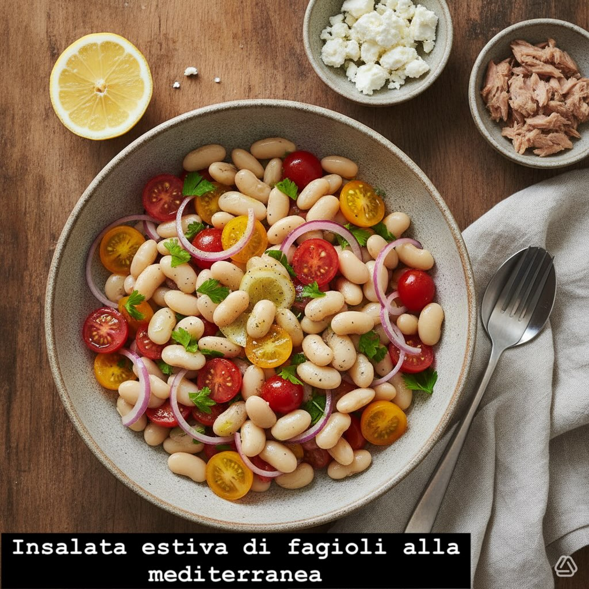

Insalata estiva di fagioli alla mediterranea
Un'insalata fresca e leggera, perfetta per il pranzo estivo o come contorno per grigliate. I fagioli cannellini si sposano con pomodorini dolci e cipolla rossa, conditi con olio extravergine e limone.
Ingredienti (4 porzioni)
- 400 g fagioli cannellini cotti (sgocciolati)
- 200 g pomodorini ciliegia, tagliati a metà
- 1 cipolla rossa piccola, affettata sottile
- 1 manciata di prezzemolo tritato
- 2 cucchiai (30 ml) olio extravergine d'oliva
- Succo di 1/2 limone
- Sale, pepe nero a piacere
- (Opzionale) 100 g feta sbriciolata o 120 g tonno al naturale per variante proteica
👨🍳 Preparazione
- In una ciotola grande unisci i fagioli, i pomodorini, la cipolla e il prezzemolo.
- Condisca con olio, succo di limone, sale e pepe; mescola delicatamente.
- Lascia riposare in frigorifero 15-30 minuti per far amalgamare i sapori.
- Aggiungi feta o tonno solo al momento di servire se usi le varianti.
📊 Valori nutrizionali (per porzione, ricetta base senza feta/tonno)
- Calorie: ~210 kcal
- Proteine: ~7 g
- Grassi: ~8 g
- Carboidrati: ~22 g
Mediterranean Summer Bean Salad
A fresh and light salad, perfect for a summer lunch or as a side for barbecues. Cannellini beans pair with sweet cherry tomatoes and red onion, dressed with extra virgin olive oil and lemon.
Ingredients (4 servings)
- 400 g cooked cannellini beans (drained)
- 200 g cherry tomatoes, halved
- 1 small red onion, thinly sliced
- 1 handful chopped parsley
- 2 tablespoons (30 ml) extra virgin olive oil
- Juice of 1/2 lemon
- Salt, black pepper to taste
- (Optional) 100 g crumbled feta or 120 g natural tuna for protein variation
👨🍳 Preparation
- In a large bowl combine beans, cherry tomatoes, onion and parsley.
- Dress with oil, lemon juice, salt and pepper; mix gently.
- Refrigerate for 15-30 minutes to let flavors meld.
- Add feta or tuna just before serving if using variations.
Ensalada de Verano de Alubias a la Mediterránea
Una ensalada fresca y ligera, perfecta para el almuerzo de verano o como guarnición para barbacoas. Las alubias cannellini se combinan con tomates cherry dulces y cebolla roja, aliñados con aceite de oliva virgen extra y limón.
Ingredientes (4 raciones)
- 400 g alubias cannellini cocidas (escurridas)
- 200 g tomates cherry, cortados por la mitad
- 1 cebolla roja pequeña, cortada en finas láminas
- 1 puñado de perejil picado
- 2 cucharadas (30 ml) aceite de oliva virgen extra
- Zumo de 1/2 limón
- Sal, pimienta negra al gusto
- (Opcional) 100 g feta desmenuzada o 120 g atún al natural para variación proteica
👨🍳 Preparación
- En un bol grande mezcla las alubias, los tomates cherry, la cebolla y el perejil.
- Aliña con aceite, zumo de limón, sal y pimienta; mezcla suavemente.
- Deja reposar en el frigorífico 15-30 minutos para que se mezclen los sabores.
- Añade feta o atún justo antes de servir si usas las variaciones.
Salada de Verão de Feijão à Mediterrânica
Uma salada fresca e leve, perfeita para o almoço de verão ou como acompanhamento para churrascos. O feijão cannellini combina com tomates cherry doces e cebola roxa, temperado com azeite de oliva virgem extra e limão.
Ingredientes (4 porções)
- 400 g feijão cannellini cozido (escorrido)
- 200 g tomates cherry, cortados ao meio
- 1 cebola roxa pequena, cortada em fatias finas
- 1 punhado de salsa picada
- 2 colheres de sopa (30 ml) azeite de oliva virgem extra
- Sumo de 1/2 limão
- Sal, pimenta preta a gosto
- (Opcional) 100 g feta desfeita ou 120 g atum ao natural para variante proteica
👨🍳 Preparação
- Numa tigela grande misture o feijão, os tomates cherry, a cebola e a salsa.
- Tempere com azeite, sumo de limão, sal e pimenta; misture delicadamente.
- Deixe repousar no frigorífico 15-30 minutos para os sabores se misturarem.
- Adicione feta ou atum apenas na hora de servir se usar as variantes.
Mediterraner Sommerbohnensalat
Ein frischer und leichter Salat, perfekt für das Sommermittagessen oder als Beilage zum Grillen. Cannellini-Bohnen vereinen sich mit süßen Cherrytomaten und roten Zwiebeln, abgeschmeckt mit nativem Olivenöl extra und Zitrone.
Zutaten (4 Portionen)
- 400 g gekochte Cannellini-Bohnen (abgetropft)
- 200 g Cherrytomaten, halbiert
- 1 kleine rote Zwiebel, in dünne Scheiben geschnitten
- 1 Handvoll gehackte Petersilie
- 2 Esslöffel (30 ml) natives Olivenöl extra
- Saft von 1/2 Zitrone
- Salz, schwarzer Pfeffer nach Geschmack
- (Optional) 100 g zerbröselter Feta oder 120 g Naturthunfisch für proteinreiche Variante
👨🍳 Zubereitung
- In einer großen Schüssel Bohnen, Cherrytomaten, Zwiebel und Petersilie vermischen.
- Mit Öl, Zitronensaft, Salz und Pfeffer würzen; vorsichtig mischen.
- Für 15-30 Minuten im Kühlschrank ruhen lassen, damit sich die Aromen verbinden.
- Bei Bedarf Feta oder Thunfisch kurz vor dem Servieren hinzufügen.
Μεσογειακή Καλοκαιρινή Σαλάτα με Φασόλια
Μια φρέσκια και ελαφριά σαλάτα, τέλεια για το καλοκαιρινό μεσημεριανό ή ως συνοδευτικό για ψητά. Τα φασόλια cannellini συνδυάζονται με γλυκά ντοματίνια και κόκκινο κρεμμύδι, ντυμένα με έξτρα παρθένο ελαιόλαδο και λεμόνι.
Συστατικά (4 μερίδες)
- 400 γραμ. μαγειρεμένα φασόλια cannellini (σουρωμένα)
- 200 γραμ. ντοματίνια, κομμένα στη μέση
- 1 μικρό κόκκινο κρεμμύδι, κομμένο σε λεπτές φέτες
- 1 χούφτα ψιλοκομμένο μαϊντανό
- 2 κουταλιές της σούπας (30 ml) έξτρα παρθένο ελαιόλαδο
- Χυμός 1/2 λεμονιού
- Αλάτι, μαύρο πιπέρι κατά βούληση
- (Προαιρετικά) 100 γραμ. τριμμένη φέτα ή 120 γραμ. τόνος στο νερό για παραλλαγή με πρωτεΐνη
👨🍳 Εκτέλεση
- Σε ένα μεγάλο μπολ αναμείξτε τα φασόλια, τα ντοματίνια, το κρεμμύδι και τον μαϊντανό.
- Ντύστε με ελαιόλαδο, χυμό λεμονιού, αλάτι και πιπέρι· ανακατέψτε απαλά.
- Αφήστε το στο ψυγείο για 15-30 λεπτά για να ενωθούν οι γεύσεις.
- Προσθέστε φέτα ή τόνο λίγο πριν το σερβίρισμα αν χρησιμοποιείτε παραλλαγές.